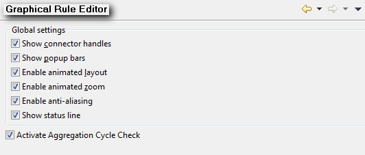

|

|
|
Setting Preferences |
|
|
|
|
Setting Preferences |
| 1. | Select Window -> Preferences: |

The following form appears:
| 2. | Browse through the Preferences dialog pages by looking through all of the titles in the left pane or searching a smaller set of titles using the filter field at the top of the left pane. |
The results returned by the filter match both Preference page titles and keywords such as "Template" or "Data" (just examples).
Most of the settings are quite self-explanatory, so only the most important settings are described below.
General
The General options are self-explanatory. For more information on the standard Eclipse preferences (General Settings), see the Eclipse documentation at eclipse.org.
Graph Generation
You can specify different configuration parameters (margins and directories) for printing a graph with the Graphviz tool.
Graphical Rule Editor

You can formulate rules in a graphical way.
Language Preferences
Here you can specify the languages for which you want to develop your ontology. The chosen languages are shown on the user interface for Adding Comments and Labels.
Large Ontologies
If there are ontologies with so many classes or instances on the same level that scrolling would take a lot of time, you can group them to simplify the view.
For example: 10 entities should be grouped:
| 1. | In the entry field Number of Entities to be grouped type in the number 10. |
| 2. | Click on Apply and then on OK. |
| 3. | Select an element (for example, a class) with more than 10 subclasses in the tree menu of the OntologyNavigator. |
The following warning message appears:
| 3. | Click on OK. |
The entities are displayed in the following format: [Subclass1,.......SubclassN]-(Number of entities to be grouped). A new icon notifies you that the elements are grouped.

The procedure to group instances is the same like the one described above.
You can also choose a set of classes which should only be displayed. This can be seen as a kind of filter
Mapping Preferences
As you might get a large number of facts within your mapping scenario we recommend that you define the maximum number of fetched instances and the values that are shown in the preview. This improves the performance of the mapping components.
ObjectLogic Editor
It shows the content of an ontology as ObjectLogic in a text editor. Specify whether you want to use the syntax highlighting (recommended) and whether you will have to set a check mark (confirm dialog) when opening an ontology in the ObjectLogic editor.
Use the Colors and Templates options to set the appearance of the ObjectLogic textual editor.
Query Tool
By default, the queries you create and run in OntoStudio are executed against the embedded OntoBroker. If you have an OntoBroker instance running somewhere, you can also use OntoStudio to send queries to the running OntoBroker. To do this you only have to select the "External Server" option and then provide the connection details.
NOTE: Queries against the external OntoBroker should be fully qualified. If you select the "External Server" option, all OntoStudio queries are sent to the external server. If you want to run queries on your local ontologies again, you have to switch back to the "Internal Server" mode.
Report Design
These preferences are equal to standard BIRT preferences. The documentation of the BIRT report plug-ins can be found at the BIRT project page (http://www.eclipse.org/birt/).
Validator
Here you can specify sets of constraints (which are displayed in the Constraint sets frame). The different constraints of the selected constraint set are displayed in the Constraints frame.
To create a new set of constraints, click on Add... next to the Constraint sets frame. Choose a name for the new set and click on OK. You can see the new set in the Constraint sets frame.
To add a constraint to a set, select the name of the set and click on Add... next to the Constraints frame. Use the newly opened window to write the description of the constraint in the Description frame and the constraint itself in the Constraints frame. Then click on OK and you see the new constraint in the Constraints frame.
You can delete or edit a created constraint/set of constraints by selecting it and clicking on Delete or Edit... respectively.
Visualizer
This view displays the ontology and all of the hierarchy elements (classes, relations, properties, instances) in a graph. As your ontology might have a large number of Properties, it is better not to set the checkmarks.